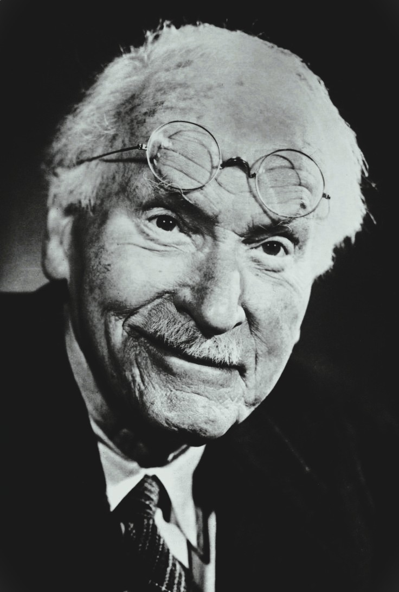
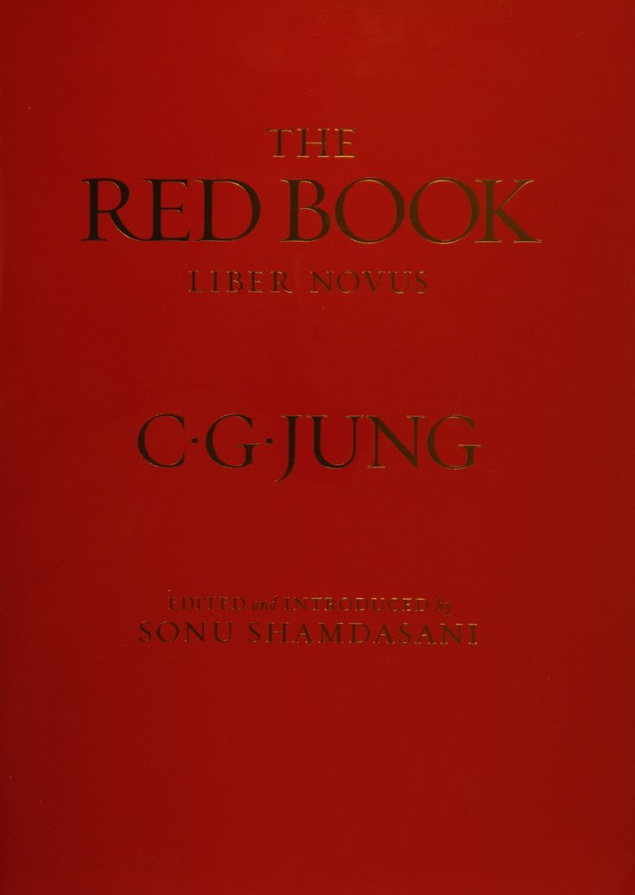

Who Was Carl Jung?
Carl Jung, in full Carl Gustav Jung, was a Swiss psychiatrist and psychoanalyst who lived from 1875 to 1961. He is best known as the founder of analytical psychology, developing influential theories of the collective unconscious, universal archetypes, and individuation, the lifelong psychological process of integrating conscious and unconscious material into a unified, mature self.
Jung is especially associated with his early close collaboration with, and eventual dramatic split from, Sigmund Freud, a break driven largely by disagreement over the nature of the unconscious and the role of sexuality in psychological life, after which Jung developed his own distinct psychological system incorporating mythology, religion, and symbolism far more directly than Freud's psychoanalysis had allowed.
Trained as a psychiatrist in Switzerland and working for years at the Burghölzli psychiatric hospital in Zurich, Jung combined clinical practice with wide-ranging study of mythology, alchemy, comparative religion, and dream symbolism, producing an unusually broad body of work that continues to influence psychology, spirituality, and popular culture, including the widely used Myers-Briggs personality framework.
Jung's importance rests on three distinct contributions: his theory of the collective unconscious and archetypes, which reshaped how psychologists understand shared human symbolism; his concept of individuation, which continues to inform depth psychology and personal-growth practice; and his psychological types framework, which underlies the personality-typing tools still popular today.
Carl Jung: Quick Facts
- Name — Carl Gustav Jung
- Born — July 26, 1875, Kesswil, Switzerland
- Died — June 6, 1961, Küsnacht, Switzerland
- Associated with — Analytical psychology and depth psychology
- Known for — The collective unconscious, archetypes, and individuation
- Major works — Psychological Types, Man and His Symbols, and Memories, Dreams, Reflections
- Key relationship — Early collaborator with, later split from, Sigmund Freud
- Notable concept — Psychological types (introversion and extraversion), the basis for the MBTI
- Unpublished major work — The Red Book (Liber Novus), published posthumously in 2009
- Historical importance — Founder of analytical psychology and one of the most influential psychologists of the 20th century
Carl Jung Timeline: Key Dates and Events
Carl Jung's career spans nearly six decades of clinical practice, theoretical writing, and public influence, and the following timeline lists the most historically documented dates and events, drawn from his own autobiography, his published correspondence with Freud, and institutional records.
- 1875 — Born in Kesswil, Switzerland, on July 26.
- 1900 — Began working as a psychiatrist at the Burghölzli hospital in Zurich.
- 1906 — Began correspondence with Sigmund Freud, initiating their close professional collaboration.
- 1907 — Met Freud in person in Vienna; the two talked for thirteen hours straight.
- 1910 — Became first president of the International Psychoanalytical Association.
- 1912 — Published Psychology of the Unconscious, marking growing theoretical divergence from Freud.
- 1913 — Formally broke with Freud, ending their personal and professional relationship.
- 1913–1917 — Underwent his "confrontation with the unconscious," recorded later in the Red Book.
- 1921 — Published Psychological Types, introducing introversion and extraversion.
- 1944 — Suffered a heart attack and near-death experience that shaped his later religious writing.
- 1961 — Died in Küsnacht, Switzerland, on June 6, shortly after completing Man and His Symbols.
- 2009 — The Red Book (Liber Novus) was published posthumously for the first time.
What Time Period Did Carl Jung Live In?

Carl Jung lived from 1875 to 1961, a period that saw the very founding of psychoanalysis as a discipline under Sigmund Freud in Vienna, followed by its rapid international spread, internal theoretical splits, and eventual diversification into competing schools of depth psychology during the early twentieth century.
This era also encompassed both World Wars and significant European political upheaval, events that shaped Jung's later interest in collective psychological phenomena, including how shared archetypal material could help explain mass social and political behavior, a concern reflected in his later writing on collective psychology and cultural crisis.
Jung's career unfolded largely in Zurich, Switzerland, a significant early center for psychiatric innovation, where his clinical work at the Burghölzli hospital under the psychiatrist Eugen Bleuler gave him direct exposure to serious mental illness before his theoretical work moved toward broader questions of symbolism, religion, and universal human psychology.
What Was Carl Jung's Early Life Like?
Carl Jung was born in Kesswil, Switzerland, in 1875, the son of a Swiss Reformed pastor, and he later described his childhood in his autobiography as marked by vivid dreams, unusual visionary experiences, and a persistent sense of living with what he called "two personalities," an everyday schoolboy self and a more ancient, philosophically reflective inner self.
Jung studied medicine at the University of Basel before specializing in psychiatry, a somewhat unusual and lower-status medical specialty at the time, and he began his clinical career at the Burghölzli psychiatric hospital in Zurich in 1900, working under the noted psychiatrist Eugen Bleuler, who coined the term "schizophrenia."
These early clinical experiences with severely mentally ill patients, combined with his own childhood fascination with dreams and inner visionary experience, established the foundation for Jung's later theoretical interest in the unconscious mind and its symbolic contents, a concern that would eventually distinguish his mature analytical psychology from Freud's more narrowly clinical psychoanalysis.
What Was Carl Jung's Relationship with Sigmund Freud?
Carl Jung began corresponding with Sigmund Freud in 1906 after Freud read Jung's early research on word association, and the two quickly formed a close and productive professional relationship, meeting in person in 1907 for a legendary thirteen-hour conversation in Vienna that marked the beginning of their intense collaboration.
Freud, who saw Jung as intellectually gifted and, crucially, not Jewish at a time when he worried psychoanalysis was perceived as a specifically Jewish enterprise, arranged for Jung to become the first president of the International Psychoanalytical Association in 1910, positioning him as Freud's designated successor and heir to the psychoanalytic movement.
This close mentorship relationship, often described using Freud's own language of Jung as his intended "crown prince," gradually deteriorated over several years of growing theoretical disagreement, ultimately ending in a formal and painful personal break in 1913 that neither man would ever fully reconcile.
Why Did Jung and Freud Split?
Jung and Freud split primarily over theoretical disagreement regarding the nature of libido and the unconscious, with Freud insisting that libido was fundamentally sexual in nature and that the unconscious consisted mainly of personally repressed material, while Jung increasingly argued that libido represented a more general life energy and that the unconscious contained universal, inherited symbolic content beyond personal experience.
This theoretical disagreement became public and irreversible following Jung's 1912 publication of Psychology of the Unconscious, later revised as Symbols of Transformation, which directly challenged core elements of Freudian theory and led Freud to interpret the work as a personal betrayal rather than a legitimate scientific disagreement.
The two men formally ended their relationship in 1913, with Jung resigning his presidency of the International Psychoanalytical Association shortly afterward, and this painful break plunged Jung into a period of significant personal psychological crisis that he later called his "confrontation with the unconscious."
What Did Carl Jung Believe?
Carl Jung believed that the human psyche contains not only a personal unconscious, made up of an individual's own forgotten or repressed experiences, but also a deeper, collective unconscious shared universally across all human beings, containing inherited symbolic patterns he called archetypes.
Jung held that genuine psychological health requires individuation, a lifelong process of consciously integrating unconscious material, including difficult or rejected aspects of the self, into a unified and mature personality, rather than remaining unconsciously dominated by unexamined archetypal patterns.
Jung also maintained that religious, mythological, and alchemical symbolism across different world cultures reflects genuine underlying psychological truths about the structure of the human mind, treating these traditions as valuable sources of psychological insight rather than mere superstition to be dismissed by a scientifically minded psychology.
Scholars continue to debate how much of Jung's theoretical framework meets standards of rigorous empirical science versus functioning more as a symbolic or spiritual system, but his overall contribution is consistently recognized as one of the most historically influential and culturally far-reaching bodies of thought in the history of psychology.
What Is the Collective Unconscious?
The collective unconscious is Jung's theory of a shared, inherited layer of the unconscious mind, common to all human beings regardless of individual personal experience or specific culture, containing universal symbolic patterns called archetypes rather than personally acquired memories.
Jung distinguished this collective layer from the more familiar personal unconscious, which contains an individual's own forgotten memories and repressed experiences, arguing that the collective unconscious instead represents a deeper, biologically inherited psychological structure shared across the entire human species, similar in some respects to instinct.
Jung developed this theory partly by observing recurring symbolic patterns across the dreams, myths, and religious traditions of widely different and historically unconnected cultures, concluding that such striking similarity suggested a shared underlying psychological structure rather than mere coincidence or direct cultural transmission between these societies.
What Are Jungian Archetypes?
Archetypes, in Jung's theory, are universal, inherited symbolic patterns or images residing within the collective unconscious, representing recurring psychological themes, including the Mother, the Hero, the Wise Old Man, and the Trickster, that appear consistently across the myths, religions, and dreams of widely different world cultures.
Jung argued that archetypes function as inherited predispositions toward certain patterns of experience and behavior, shaping how individuals perceive and respond to recurring life situations, such as birth, death, and transformation, even though the archetype itself remains an unconscious structural pattern rather than a specific, consciously remembered image.
Among the many archetypes Jung identified, four became especially central to his mature theory: the Persona, the Shadow, the Anima and Animus, and the Self, each representing a distinct structural element of the psyche that individuation seeks to consciously integrate.
What Is the Shadow in Jungian Psychology?
The Shadow is Jung's term for the unconscious archetype containing the aspects of a person's personality that the conscious ego rejects, represses, or refuses to acknowledge, including socially unacceptable desires, weaknesses, and impulses that conflict with a person's preferred self-image.
Jung argued that the Shadow, left unconscious and unintegrated, tends to be projected outward onto other people, causing an individual to strongly dislike or judge in others precisely those qualities they refuse to recognize within themselves, a psychological mechanism Jung considered a significant source of interpersonal and even large-scale social conflict.
Genuine psychological growth, in Jung's framework, requires consciously acknowledging and integrating the Shadow rather than continuing to deny or project it, a difficult but necessary step within the broader individuation process toward a more complete and honest sense of self.
What Is the Anima and Animus?
The Anima and Animus are Jung's terms for the unconscious contrasexual archetype present in every individual, the Anima representing an unconscious feminine aspect within men and the Animus representing an unconscious masculine aspect within women, in Jung's original and now widely debated formulation of this theory.
Jung argued that this contrasexual inner figure significantly shapes how a person relates emotionally to others, particularly romantic partners, since unconscious projection of the Anima or Animus onto another person can produce intense attraction or fascination that says more about a person's own inner psychological structure than about the other person's actual individual character.
Contemporary psychologists and Jungian scholars have significantly revisited and often critiqued the strictly binary, gender-essentialist framing of this original theory, while still generally recognizing the underlying insight that unconscious projection can significantly shape romantic attraction and relationship dynamics.
What Is the Self Archetype?
The Self, in Jung's theory, is the central organizing archetype representing the totality and eventual unification of the entire psyche, including both conscious and unconscious elements, and it functions as the ultimate psychological goal toward which the individuation process gradually moves.
Jung distinguished the Self sharply from the ego, which represents only the center of conscious awareness and everyday identity, arguing that the Self encompasses a far larger and initially unconscious totality that the ego can only gradually and partially come to recognize and integrate over the course of a lifetime.
Jung frequently associated symbols of wholeness and centeredness, including circular mandala images found across many world religious and artistic traditions, with symbolic representations of the Self, treating such universal imagery as further supporting evidence for his broader theory of the collective unconscious.
What Is Individuation?
Individuation is Jung's term for the lifelong psychological process through which a person consciously integrates unconscious material, including the Shadow, the Anima or Animus, and other archetypal contents, into a unified, mature, and authentically individual personality centered around the Self rather than the more limited ego.
Jung considered individuation the central goal and purpose of genuine psychological development, arguing that most people live their lives largely governed by unconscious archetypal patterns and unreflective social conformity, called the Persona, without ever undertaking the more difficult, ongoing work of conscious self-integration individuation requires.
Jung believed individuation typically becomes especially significant during the second half of life, often triggered by what he called a "midlife crisis," a period of psychological reassessment prompted by the recognition that earlier conscious identity and social roles no longer adequately reflect the individual's full, deeper psychological reality.
What Are Jung's Psychological Types?
Jung's psychological types, presented in his 1921 work Psychological Types, distinguish between introversion, an orientation toward one's own inner subjective world, and extraversion, an orientation toward the external, objective world, along with four additional cognitive functions: thinking, feeling, sensation, and intuition.
Jung argued that every individual possesses a characteristic combination of these basic orientations and functions, producing a distinctive and relatively stable overall psychological type that shapes how a person habitually perceives information and makes decisions across different life situations.
This framework of psychological types became historically significant well beyond academic psychology, since it directly provided the theoretical foundation later adapted by Katharine Cook Briggs and Isabel Briggs Myers into the widely used Myers-Briggs Type Indicator, or MBTI, personality assessment.
What Is Synchronicity?
Synchronicity is Jung's concept describing meaningful coincidences between events that appear causally unrelated to one another, but which a person nonetheless experiences as significantly and meaningfully connected, particularly when an external event closely mirrors an individual's own current internal psychological state.
Jung proposed synchronicity as a genuine, if unusual, psychological principle operating alongside ordinary causality, suggesting that meaningful connections between events could arise through shared underlying archetypal patterns rather than through any direct causal chain linking the events themselves.
This concept remains one of Jung's more controversial theoretical contributions, generally treated with skepticism within mainstream empirical psychology and science, while continuing to attract considerable popular and spiritual interest as a framework for interpreting meaningful personal coincidence.
What Is Jung's Theory of Dreams?
Jung's theory of dreams holds that dreams serve a compensatory psychological function, presenting unconscious material, including archetypal symbols and rejected Shadow content, that balances and complements a person's conscious attitude, rather than functioning primarily to disguise repressed sexual wishes, as Freud's earlier dream theory had argued.
Jung generally approached dream symbols as meaningful in their own right rather than as disguised representations requiring decoding into some other hidden latent content, and he paid particular attention to recurring archetypal imagery within dreams as potentially significant indicators of a person's current position within their ongoing individuation process.
This approach to dream interpretation, emphasizing symbolic and archetypal meaning over disguised sexual content, marked one of the clearest practical differences between Jung's analytical psychology and Freud's classical psychoanalysis, and it continues to inform contemporary Jungian clinical practice today.
What Are Complexes in Jungian Psychology?
A complex, in Jung's psychology, is a cluster of emotionally charged unconscious ideas, memories, and associations organized around a common theme, such as a "mother complex" or "inferiority complex," which can significantly influence a person's thoughts, feelings, and behavior without their full conscious awareness.
Jung developed his early theory of complexes through experimental word-association research conducted at the Burghölzli hospital, measuring delayed or unusual verbal reactions to specific stimulus words as evidence of an underlying unconscious emotional complex disrupting normal conscious response.
This research on complexes represents one of Jung's earliest significant scientific contributions, predating his later, more speculative theoretical work on archetypes and the collective unconscious, and it directly contributed the term "complex" to everyday popular psychological vocabulary still widely used today.
What Is the Red Book (Liber Novus)?

The Red Book, formally titled Liber Novus, is Jung's large, elaborately hand-illustrated personal journal, composed primarily between 1913 and 1930, documenting the intense visions, imagined dialogues, and psychological material he experienced during his "confrontation with the unconscious" following his break with Freud.
Jung kept the Red Book private throughout his own lifetime, sharing it only with a small circle of close associates, and it remained unpublished for nearly a century until his estate finally authorized its public release in 2009, allowing scholars and the general public direct access to this foundational source material for the first time.
The Red Book is now widely regarded as the direct experiential source from which much of Jung's later theoretical framework, including his concepts of archetypes and individuation, originally emerged, offering an unusually intimate window into the personal psychological crisis that shaped his mature analytical psychology.
What Is Man and His Symbols About?
Man and His Symbols, Jung's final major work, completed shortly before his death in 1961, presents his core theories of the unconscious, archetypes, and dream symbolism in accessible, non-technical language specifically intended for a general popular readership rather than specialist academic psychologists.
Jung conceived and oversaw the project personally, though he wrote only the book's introductory chapter himself before his death, with several of his close colleagues, including Marie- Louise von Franz, completing the remaining chapters according to his specific outline and guidance.
Man and His Symbols became one of the most widely read introductions to Jungian psychology ever published, valued for its accessible presentation and extensive illustrations, and it remains a standard entry point for general readers first encountering Jung's theories of the unconscious and archetypal symbolism.
What Is Memories, Dreams, Reflections?
Memories, Dreams, Reflections is Jung's autobiography, compiled and edited in close collaboration with his secretary Aniela Jaffé during his final years and published shortly after his death in 1961, presenting Jung's own account of his inner psychological and spiritual development rather than a conventional external life history.
The work deliberately emphasizes Jung's inner dreams, visions, and psychological experiences over ordinary external biographical detail, reflecting his own conviction that his inner psychological life, rather than his outward career achievements, constituted the truly meaningful story of his own personal development.
Memories, Dreams, Reflections remains one of the most widely read psychological autobiographies ever published, offering readers direct access to Jung's own personal understanding of concepts including individuation, synchronicity, and the collective unconscious as he experienced them within his own life.
What Was Jung's "Confrontation with the Unconscious"?
Jung's "confrontation with the unconscious" refers to an intense personal psychological crisis lasting roughly from 1913 to 1917, triggered largely by his painful break with Freud, during which Jung deliberately engaged with his own vivid visions, dreams, and unconscious material through a method he later called active imagination.
During this period, Jung recorded his experiences in detail within what would become the Red Book, deliberately allowing unconscious imagery and imagined dialogue to unfold while maintaining careful conscious observation and reflection, a method he considered essential for genuinely engaging with, rather than merely intellectually theorizing about, the unconscious mind.
Jung later described this difficult period as the direct experiential source of his subsequent mature theoretical work, arguing that the archetypal patterns and psychological insights he encountered during this personal crisis provided the essential foundation for his later systematic theories of archetypes, the collective unconscious, and individuation.
What Did Jung Say About Religion, Alchemy, and Mythology?
Jung treated religion, alchemy, and mythology across diverse world cultures as valuable historical repositories of genuine psychological insight, arguing that their symbolic imagery reflects real, universal patterns of the human unconscious rather than mere superstition to be dismissed by a scientifically minded psychology.
Jung devoted particular sustained study to medieval European alchemy, arguing that alchemical symbolism, concerned outwardly with transforming base metal into gold, actually encoded a sophisticated symbolic representation of the psychological individuation process, transforming an unintegrated personality into a unified, whole Self.
This sustained engagement with religious and mythological material distinguished Jung sharply from Freud, who treated religion primarily as collective illusion, and it established Jung as an important bridge figure between academic psychology and the study of comparative religion, mythology, and spirituality.
Is the MBTI Based on Carl Jung?
Yes, the Myers-Briggs Type Indicator, or MBTI, is based directly on Carl Jung's 1921 theory of psychological types, particularly his concepts of introversion and extraversion combined with the four cognitive functions of thinking, feeling, sensation, and intuition.
The MBTI itself was developed decades after Jung's original theory by the American mother-daughter team of Katharine Cook Briggs and Isabel Briggs Myers, who adapted Jung's framework into a practical, widely distributed personality questionnaire during the mid-twentieth century, without any direct involvement or endorsement from Jung himself.
Contemporary academic psychologists frequently criticize the MBTI's scientific reliability and validity, even while acknowledging its considerable ongoing popularity, a distinction worth noting since Jung's own original theoretical framework and the specific commercial MBTI assessment built upon it are not identical and have received quite different levels of scientific scrutiny and support.
How Is Jung Different from Freud?
Jung differs from Sigmund Freud primarily in his broader conception of the unconscious, since Jung proposed a collective, universally shared unconscious containing inherited archetypes, while Freud's psychoanalysis focused almost exclusively on the personal unconscious formed through an individual's own repressed childhood experience.
Where Freud treated sexuality, and specifically libido understood in a primarily sexual sense, as the central driving force of psychological life, Jung reconceived libido more broadly as a general life energy, and he treated religious and spiritual experience as a potentially genuine and psychologically valuable dimension of human life rather than as mere illusion, as Freud generally maintained.
This fundamental theoretical divergence produced two distinct and enduringly influential schools of depth psychology, Freudian psychoanalysis and Jungian analytical psychology, which continue to be studied, compared, and applied somewhat differently within contemporary clinical and theoretical psychology.
How Did Jung Influence Modern Psychology and Pop Culture?
Jung's theories directly shaped the subsequent development of depth psychology and psychotherapy, with Jungian analysts continuing to practice his specific therapeutic approach today, and his concepts of introversion and extraversion becoming foundational, widely used categories within both academic and popular personality psychology.
Beyond clinical psychology, Jung's archetypal theory significantly influenced literary criticism, comparative mythology, and film studies, most notably through mythologist Joseph Campbell's related "hero's journey" framework, which has directly shaped the structure of countless popular films and stories, including well-known modern franchises.
Jung's concepts, including the Shadow, the Self, and synchronicity, also remain widely referenced within popular spirituality, self-help literature, and casual cultural conversation, reflecting the unusually broad and continuing reach of his ideas well beyond specialized academic psychology.
What Are Common Misconceptions About Carl Jung?
One common misconception treats Jung as merely a dissident student of Freud who simply softened psychoanalysis with spirituality, overlooking the extent to which Jung developed a genuinely distinct and independently systematic psychological framework addressing questions, including collective symbolism and religious experience, that Freud's theory did not seriously engage.
Another common misconception assumes the MBTI personality test is scientifically equivalent to, or fully endorsed by, Jung's own original theory, when Jung himself never created, endorsed, or even encountered the MBTI, which was developed decades after his original 1921 theoretical framework by different researchers.
A further misconception treats Jung's engagement with alchemy, mythology, and religious symbolism as evidence he was not a serious scientist, overlooking his extensive early clinical and experimental research on complexes and word association, which represents rigorous scientific work predating his later, more explicitly symbolic theoretical interests.
What Is Carl Jung's Legacy Today?
Carl Jung's legacy rests on three enduring contributions: his theory of the collective unconscious and archetypes, which reshaped how psychology and cultural studies understand shared human symbolism; his concept of individuation, which continues to inform depth psychology and personal-growth practice; and his psychological types framework, which underlies widely used personality-typing tools today.
Jungian analytical psychology continues to be practiced by trained analysts worldwide, and institutions including the C.G. Jung Institute in Zurich continue to train new practitioners and conduct scholarship building directly on his original theoretical framework and clinical method.
Today, Jung is widely recognized not only as a founding figure of depth psychology but as one of the most culturally influential thinkers of the twentieth century, whose ideas continue to shape psychology, comparative religion, literary criticism, and popular understanding of personality and the unconscious mind.
Carl Jung: Main Psychological Ideas
Carl Jung's central ideas are best summarized under five key themes drawn from his clinical work, his theoretical writing, and his personal autobiographical material.
The Collective Unconscious
A shared, inherited layer of the unconscious mind common to all humans, containing universal archetypal patterns.
Archetypes
Universal symbolic patterns, including the Shadow, the Anima and Animus, and the Self, recurring across world mythology and dreams.
Individuation
The lifelong process of integrating unconscious material into a unified, mature personality centered on the Self.
Psychological Types
Introversion and extraversion, combined with four cognitive functions, later adapted into the MBTI.
Symbolic Value of Religion and Myth
Religious and mythological symbolism reflects genuine underlying psychological truths rather than mere superstition.
What Do We Actually Know About Carl Jung's Life?
Carl Jung's biography is well documented through his own autobiography, his extensive published correspondence with Freud and other colleagues, institutional records from the Burghölzli hospital, and, since 2009, the direct primary source material of the Red Book, giving scholars unusually rich access to both his outer career and inner psychological development.
Relatively Well-Attested
- Jung was born in Kesswil, Switzerland, in 1875 and died in Küsnacht in 1961.
- He corresponded with and worked closely with Freud from 1906 until their formal break in 1913.
- He published Psychological Types in 1921, introducing introversion and extraversion.
- He kept the Red Book private during his lifetime; it was published posthumously in 2009.
- He completed his introduction to Man and His Symbols shortly before his death in 1961.
Areas of Ongoing Scholarly Debate
- Whether the collective unconscious and archetypes meet standards of rigorous empirical scientific support.
- How to interpret the strictly binary, gender-essentialist framing of Jung's original Anima and Animus theory.
- How precisely the material in the Red Book relates to Jung's later, more systematically presented theoretical writing.
Why Is Carl Jung Important?
Carl Jung is important because he developed an influential and independently systematic alternative to Freudian psychoanalysis, introducing concepts, including the collective unconscious, archetypes, and individuation, that continue to shape psychology, comparative religion, and popular culture nearly a century later.
His theoretical legacy raises a fundamental question that remains central to psychology and philosophy of mind: Does the human unconscious contain genuinely universal, inherited symbolic patterns shared across all cultures, or do apparent similarities in mythology and dreams instead reflect shared environmental experience and cultural transmission rather than any biologically inherited archetypal structure?
Jung's importance therefore does not depend on resolving every scientific debate about the empirical status of his specific theories. His significance comes from his role in expanding psychology's engagement with symbolism, religion, and personality, a legacy that continues to shape both academic psychology and popular culture today.
Carl Jung Explained Simply
Carl Jung was a Swiss psychiatrist who believed the human mind contains a shared collective unconscious filled with universal symbolic patterns called archetypes, including the Shadow, the Anima and Animus, and the Self, and that genuine psychological growth requires integrating these unconscious patterns through a lifelong process he called individuation.
Instead of following his early mentor Sigmund Freud's more narrowly sexual and personal theory of the unconscious, Jung developed his own broader analytical psychology, drawing on mythology, religion, and alchemy, and his theory of psychological types later became the basis for the popular Myers-Briggs personality test.
- Thinker: Carl Gustav Jung
- Period: 1875–1961
- Tradition: Analytical psychology and depth psychology
- Major works: Psychological Types and Man and His Symbols
- Central concern: The collective unconscious and the path to psychological wholeness
- Key relationship: Early collaborator with, later split from, Sigmund Freud
A Principle Central to Jung's Philosophy
“Until you make the unconscious conscious, it will direct your life and you will call it fate.”
Frequently Asked Questions About Carl Jung
Who was Carl Jung?
Carl Jung was a Swiss psychiatrist and founder of analytical psychology, known for developing the theories of the collective unconscious, archetypes, individuation, and psychological types, and for his eventual split from Sigmund Freud.
What is the collective unconscious?
The collective unconscious is Jung's theory of a shared, inherited layer of the unconscious mind, common to all humans, that contains universal symbolic patterns called archetypes rather than the personally acquired memories found in the individual unconscious.
Is the Myers-Briggs test based on Carl Jung?
Yes, the Myers-Briggs Type Indicator (MBTI) is based on Carl Jung's 1921 theory of psychological types, particularly his concepts of introversion and extraversion, though Jung himself never created or endorsed the MBTI, which was developed decades later by Katharine Cook Briggs and Isabel Briggs Myers.
Why did Jung and Freud split?
Jung and Freud split primarily over disagreement regarding the sexual nature of libido and the scope of the unconscious, with Jung arguing for a broader collective unconscious and more general life energy than Freud's narrower psychoanalytic framework allowed.
What is the Shadow in Jungian psychology?
The Shadow is the unconscious archetype containing rejected or repressed aspects of a person's personality, which, if left unintegrated, tends to be projected outward onto other people.
What is individuation?
Individuation is Jung's term for the lifelong process of consciously integrating unconscious material into a unified, mature personality centered on the Self rather than the more limited ego.
What is the Red Book?
The Red Book, or Liber Novus, is Jung's personal illustrated journal documenting his intense visions during his "confrontation with the unconscious," kept private during his lifetime and published posthumously in 2009.
What is synchronicity?
Synchronicity is Jung's concept describing meaningful coincidences between causally unrelated events, which he proposed as a psychological principle operating alongside ordinary causality.
What is Jung's most famous book?
Jung's most widely read books include Man and His Symbols, an accessible introduction to his theories, and Memories, Dreams, Reflections, his psychological autobiography.
Why is Carl Jung important today?
Carl Jung remains important because his concepts of archetypes, the Shadow, and individuation continue to shape psychology, comparative religion, literary criticism, and popular personality frameworks like the MBTI.
Related Thinkers
Carl Jung belongs to the wider tradition of psychology and philosophy of mind. Explore thinkers who shaped and responded to many of the same questions about the unconscious, symbolism, and the self.
Philosophy Branches Connected to Carl Jung
Jung's theoretical legacy is particularly important for epistemology, where questions about the structure of the unconscious mind remain widely discussed, and for metaphysics, which continues to examine the nature of the self.
Why Carl Jung Still Matters
Carl Jung did not simply extend Freud's psychoanalysis with minor modification; he built an independently systematic psychological framework engaging directly with mythology, religion, and symbolism, producing a body of work whose influence now extends far beyond clinical psychology into popular culture and personal-growth practice.
Yet the questions associated with Jung remain fundamental to psychology and philosophy of mind: Does the unconscious contain genuinely universal symbolic patterns? What does psychological wholeness actually require? Can meaningful coincidence reveal anything about the structure of the mind?
The theory of the collective unconscious, archetypes, and individuation he developed across decades of clinical work and personal psychological exploration transformed these questions into some of the most enduringly influential contributions to modern psychology. His emphasis on symbolism, wholeness, and the integration of the unconscious made Carl Jung one of the most significant and culturally far-reaching thinkers of the modern era.
Explore Great Philosophers